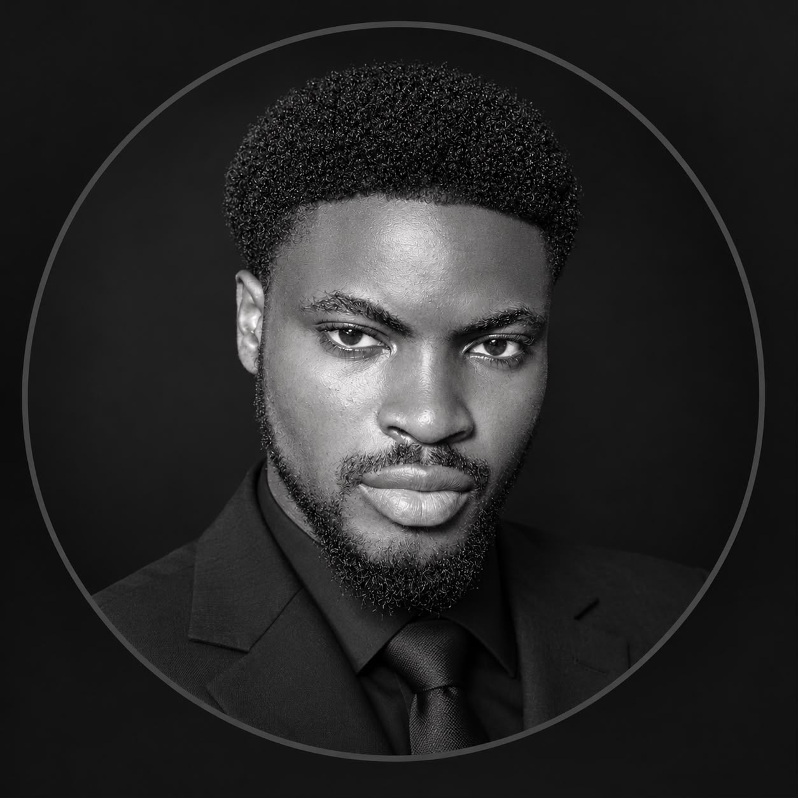

Medical Laboratory Science student & builder
Building the tools
African health tech needs.
Health Tech✦Research✦Systems Documentation✦Web Development✦Health Tech✦Research✦
01 / Selected work
A few things
I’ve built.
I build research platforms and technical documentation for health and mobility systems across Ghana.
02 / A little about me
Grounded in science.
Driven by purpose.

I’m Nazir — a fourth-year Medical Laboratory Science student at Accra Technical University, graduating September 2027, with a growing practice in research tooling and technical documentation.
Alongside my coursework I lead as General Organizer of MELSSA-ATU and General Secretary of the Hazakati Za Mungano ATU chapter, and I build web platforms and documentation for health and mobility projects across Africa.
More about me →03 / Get in touch